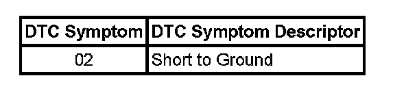

B2705
DTC B2705
Circuit Description
The body control module (BCM) controls the automatic transmission shift lock control solenoid by providing a battery positive voltage to the solenoid. The BCM utilizes a smart driver to control the voltage supply circuit to the automatic transmission shift lock control solenoid. The smart driver monitors the voltage and current flow of the control circuit.
DTC Descriptor
This diagnostic procedure supports the following DTC:
DTC B2705 Gearshift Unlock Circuit

Conditions for Running the DTC
^ The ignition switch is in the ON position.
^ The brake pedal is pressed.
^ The transmission is in the PARK position.
Conditions for Setting the DTC
Sets if there is a short to ground in the automatic transmission shift lock control solenoid control circuit
Action Taken When the DTC Sets
The BCM will not attempt to enable the voltage supply circuit of the automatic transmission shift lock control solenoid until the next key cycle.
Conditions for Clearing the DTC
^ A current DTC B2705 will clear when the malfunction is no longer present and the ignition switch is cycled.
^ All BCM history codes will clear after 100 ignition cycles with no current codes active during the 100 ignition cycles.
Diagnostic Aids
^ If the automatic transmission shift lock control circuit is shorted to ground, the automatic transmission shift lock control solenoid will be inoperative. The vehicle will shift out of PARK without pressing the brake pedal.
^ Perform the tests while wiggling the wires and connectors. This may often cause an intermittent malfunction to appear. Refer to Testing for Intermittent Conditions and Poor Connections.
Test Description
The numbers below refer to the step numbers on the diagnostic table.
2. Listen for an audible click when the automatic transmission shift lock control solenoid operates. Command both the ON and OFF states. Repeat the commands as necessary.
3. This step tests for a good ground at the ground circuit of the automatic transmission shift lock control solenoid.
4. This step verifies that the BCM is providing battery voltage to the automatic transmission shift lock control solenoid.
5. This step tests if battery voltage is constantly being applied to the automatic transmission shift lock control solenoid.